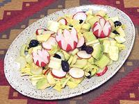

|
Avocado Celery SaladChile - Apio con Palta | ||||
| Makes: Effort: Sched: DoAhead: |
2 # ** 1 hr+ Prep |
A light, refreshing and unusual salad. Chile is very enthusiastic about Avocados, but this is one of very few recipes where they are not mashed. | |||
|
1 2 5 1/2 ----- 4 2 1/2 ----- |
# lrg c --- T T t --- |
Celery Avocado Radishes Black Olives -- Dressing Lemon Juice Olive Oil ExtV Salt ------------- |
Serve immediately after adding dressing, because the color of the Radishes will run within a few hours, ruining the appearance. Prep - (30 min - 10 min more if you need to pit olives - + 2 hours soaking time)
|